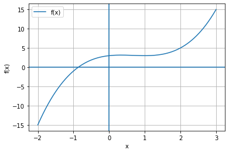
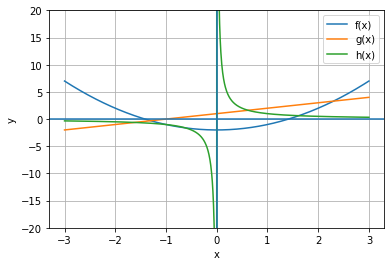
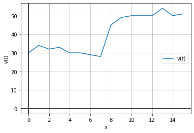

6. Plotting og grafikk
Contents
6. Plotting og grafikk#
Plotting#
Oppgave 1#
import matplotlib.pyplot as plt
import numpy as np
def f(x):
return x**3 - 2*x**2 + x + 3
x = np.linspace(-2, 3, 1000)
y = f(x)
plt.plot(x, y, label="f(x)")
plt.grid()
plt.axhline(0)
plt.axvline(0)
plt.xlabel("x")
plt.ylabel("f(x)")
plt.legend()
plt.show()

Oppgave 2#
import numpy as np
import matplotlib.pyplot as plt
def f(x):
return x**2 - 2
def g(x):
return x + 1
def h(x):
return 1/x
x = np.linspace(-3, 3, 1000)
y1 = f(x)
y2 = g(x)
y3 = h(x)
plt.plot(x, y1, label="f(x)")
plt.plot(x, y2, label="g(x)")
plt.plot(x, y3, label="h(x)")
plt.grid()
plt.axhline(0)
plt.axvline(0)
plt.xlabel("x")
plt.ylabel("y")
plt.legend()
plt.ylim([-20, 20])
plt.show()

Oppgave 3#
a) Bilen kjører først noen sekunder i om lag 30 km/t, deretter akselererer den en del, og kjører noen sekunder i om lag 50 km/t.
b)
import matplotlib.pyplot as plt
v = [30,34,32,33,30,30,29,28,45,49,50,50,50,54,50,51]
t = [0,1,2,3,4,5,6,7,8,9,10,11,12,13,14,15]
plt.plot(t, v, label="v(t)")
plt.grid()
plt.axhline(0, c="k")
plt.axvline(0, c="k")
plt.xlabel("x")
plt.ylabel("v(t)")
plt.legend()
plt.show()

c) Løsningen på denne deloppgaven er ikke testet
import numpy as np
data = np.loadtxt("../datasett/bevegelse.txt")
v = data[:,0]
t = data[:,1]
plt.plot(t, v, label="v(t)")
plt.grid()
plt.axhline(0, c="k")
plt.axvline(0, c="k")
plt.xlabel("x")
plt.ylabel("v(t)")
plt.legend()
plt.show()
---------------------------------------------------------------------------
OSError Traceback (most recent call last)
<ipython-input-16-9df7d2601c93> in <module>
1 import numpy as np
2
----> 3 data = np.loadtxt("../datasett/bevegelse.txt")
4 v = data[:,0]
5 t = data[:,1]
~/.pyenv/versions/3.8.2/envs/profag/lib/python3.8/site-packages/numpy/lib/npyio.py in loadtxt(fname, dtype, comments, delimiter, converters, skiprows, usecols, unpack, ndmin, encoding, max_rows)
959 fname = os_fspath(fname)
960 if _is_string_like(fname):
--> 961 fh = np.lib._datasource.open(fname, 'rt', encoding=encoding)
962 fencoding = getattr(fh, 'encoding', 'latin1')
963 fh = iter(fh)
~/.pyenv/versions/3.8.2/envs/profag/lib/python3.8/site-packages/numpy/lib/_datasource.py in open(path, mode, destpath, encoding, newline)
193
194 ds = DataSource(destpath)
--> 195 return ds.open(path, mode, encoding=encoding, newline=newline)
196
197
~/.pyenv/versions/3.8.2/envs/profag/lib/python3.8/site-packages/numpy/lib/_datasource.py in open(self, path, mode, encoding, newline)
533 encoding=encoding, newline=newline)
534 else:
--> 535 raise IOError("%s not found." % path)
536
537
OSError: ../datasett/bevegelse.txt not found.
Grafikk#
Oppgave 5#
from turtle import *
forward(30)
right(90)
forward(40)
right(143.3)
Oppgave 6#
from turtle import *
forward(500)
left(180-60)
forward(250)
left(180-90)
forward(433.013)
Oppgave 7#
from turtle import *
forward(200)
left(180-90)
forward(200)
left(180-45)
forward(282.84)
Oppgave 8#
from turtle import *
for j in range(2, 12):
for i in range(180):
forward(j)
left(2)
Oppgave 9#
from turtle import *
for i in range(180):
forward(5)
left(2)
Oppgave 10#
from turtle import *
def trekant(AB, AC, a, b):
forward(AB)
left(180-a)
forward(AC)
left(b)
goto(0, 0)
Oppgave 7#
from turtle import *
leo = Turtle()
don = Turtle()
leo.penup()
leo.goto(100, 200)
leo.pendown()
don.penup()
don.goto(300, 300)
don.pendown()
leo.left(180-90)
leo.forward(100)
don.left(180)
don.forward(200)
Oppgave 8#
from turtle import *
left(180-60)
forward(100)
left(180-60)
forward(100)
left(180)
forward(50)
right(60)
forward(50)
Oppgave 9#
from turtle import *
for i in range(4):
forward(100)
left(90)
left(90)
forward(100)
right(30)
forward(100)
right(120)
forward(100)